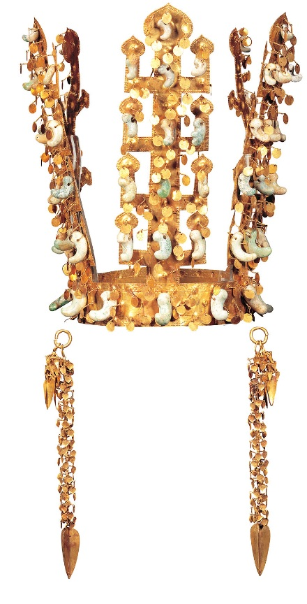

 대한민국의 문화재(大韓民國의 文化財)는 건물·조각·악보·악기·공예품·서적·서예·고문서 등의 유물·유적 가운데 역사적·예술적 가치가 높거나 역사 연구에 자료가 되는 유형문화재, 민속문화재(민속자료), 기념물, 연주·무용·공예·기술 등에서 역사적·예술적 가치가 높은 무형문화재 등을 통틀어 일컫는 말이다. 대한민국에서는 문화재를 아끼고 보호하여 후세에 잘 물려주기 위해 1962년에 문화재보호법을 제정하였다.
천마총 금관은 천마총에서 발견된 신라 때 금용가리이다. 1978년 12월 7일 대한민국의 국보 제188호로 지정되었다.